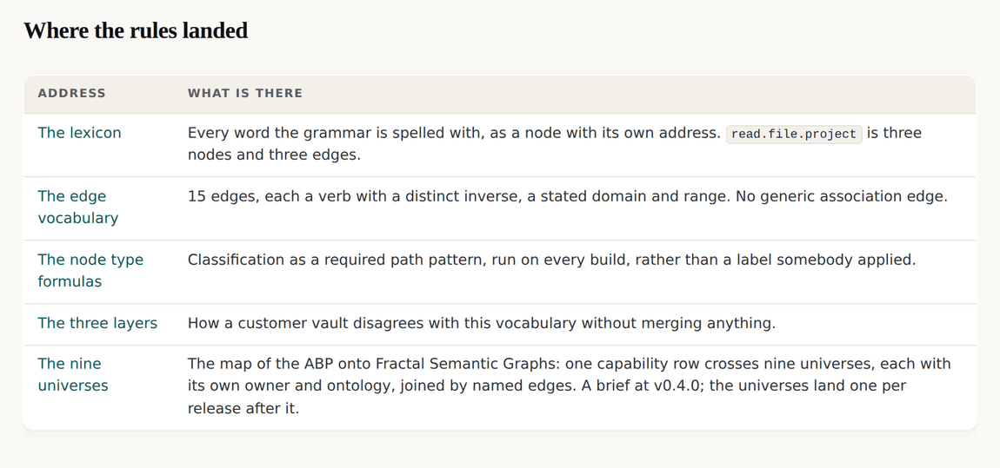

v0.4.0: An ABP is a junction object, which is what Fractal Semantic Graphs is for
Applying the zoom test to this site's own graph returns an uncomfortable answer: it decomposes one vocabulary very well and crosses into another in exactly two places. The map names the nine worlds one capability row actually crosses, and who owns each.
v0.4.0 tag, so it shows the site as it stood at that release and not as it stands today. Read on to v0.4.1, or back to v0.3.0.A test this site had been quoting backwards
The network's graph site defines a property it calls fractal, and this site's graph module quoted its first edition: if zooming into a node needs a new format or a special case, the system is hierarchical rather than fractal. That wording scores decomposition as a pass, and it was corrected at the source in August and propagated in September.
The corrected test is in two halves. What survives every zoom is the grammar: every edge a verb with an inverse, meaning in connectivity, supersede never delete, provenance kept. The ontology is meant to change. A system whose types and verbs are identical all the way down is a hierarchy.
Applying it to this site, and not liking the answer
Run that test against the graph this site held at v0.3.0, zoom by zoom, and the result is uncomfortable.
| Zoom | What you land in | Verdict |
|---|---|---|
| A capability into its verb, object and reach | three nodes in the same lexicon | Decomposition in one vocabulary |
| A deployment shape into its grant | granted capability nodes, same vocabulary | Decomposition |
| A mandate into what it authorises | capability nodes | Decomposition |
| A reach class into what each shape says it means | nine rows, each owned by the shape that said it | Fractal. The first one on the site |
| This vocabulary into the game's | one declared bridge, partial on purpose | Fractal, and honest that the bridge is total today |
| A barrier into what enforces it | three enforcer nodes and no vocabulary | One edge deep, then it stops |
| A granted row into how it is known | an evidence tier and nothing behind it | One edge deep, then it stops |
An ABP is a junction object
Here is the finding the map is built on. The four objects of an ABP are owned by four different parties who speak four different vocabularies. The grant is the vendor's published words. The evidence for it belongs to whoever observed. The barrier belongs to whoever set the control, who is often neither. The mandate is the deployer's own sentence about a job. And the licence that sits above all of it belongs to a different site entirely.
That is precisely the case Fractal Semantic Graphs exists for, so the right model is not one bigger ontology. It is nine small ones joined by named edges, with the grammar shared and nothing else.
Three words, and one ruling that keeps the map from collapsing
This site and the network's definition page use the word altitude for different things, and the map could not be drawn until that was settled.
| Word | The ruling |
|---|---|
| Altitude | Keeps its 20 August sense here: a rendering of the same facts for a different reader. It lives inside the projections universe and is never a different world. |
| Universe | Adopted from the definition page's own sentence, that on one of those links you can jump into another universe. A world with its own owner, node types and verbs. |
| Level | Position on the ladder only: down towards the byte, up towards the estate of agents. |
The release that publishes a map and builds nothing
v0.4.0 is a brief and two corrections. It adds no data, no formula and no page beyond the brief itself and a pointer to it from the graph page.

Naming the gaps is the point of publishing a map before building it. Four of the thirteen universes are named with an owner and nothing behind them: the twin, the obligations, the runtime and the estate of agents. Named gaps get filled and unnamed ones do not.
The map · The graph rules · v0.4.0's own release record